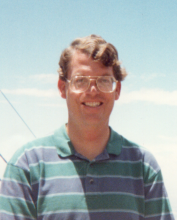

Please note: the AAS Obituaries are temporarily being hosted on this website while their full content is being ingested into the PubPub publishing platform newly adopted by the Bulletin of the American Astronomical Society. When the migration is complete, your existing links will take you to the final, migrated content. Contact peter.williams@aas.org with any questions.
Robert M. Light (1959-1998)
Robert M. Light passed away at the home of his father in Carlsbad, New Mexico at the age of 38. Bob, as he was known to his colleagues, was born in Carlsbad on August 14, 1959 to Jo Anna Wills Light and Robert S. Light. He spent his formative years in Carlsbad, attending elementary and high school there.
He decided to pursue a career in physical sciences at the University of Texas, where he graduated with a Bachelors degree in physics and astronomy. He continued his education at Yale University, receiving a Master's degree in philosophy in 1983 and a PhD in astronomy in 1988, under the guidance of Robert Zinn. Bob was remembered as an exceptionally generous and hardworking student by his advisor, a sentiment that was expressed by everyone whose lives he touched. The goal of his dissertation at Yale was to analyze the elemental abundances in globular clusters and dwarf spheroidal satellites of the Milky Way, by studying the integrated light of these systems. This work was the beginning of his vocation to understand the composition and dynamics of such systems throughout his career. It was also the start of his keen interest in developing new software tools that would permit efficient analysis in what was then the relatively new field of digital astronomical imaging with CCD detectors.
Bob's professional employment began with a postdoctoral appointment at Louisiana State University, where he worked in the Department of Physics with Arlo Landolt. From 1989 to 1992, he worked with Sandra Faber at Lick Observatory and the University of California at Santa Cruz. While there, he began participating in analysis of Hubble Space Telescope (HST) observations of globular clusters and other stellar populations in and around the Milky Way.
From 1992 until his death, Robert was employed at the Jet Propulsion Laboratory in Pasadena, California. During the first three years at JPL, Bob worked with the HST Wide-Field/Planetary-Camera team led by James Westphal. He was responsible for developing analysis software to monitor the performance of the instrument, but also made use of his expertise to support and lead scientific analyses of WF/PC observations.
In 1995, Bob transferred to the Two Micron All Sky Survey (2MASS) team at the Infrared Processing and Analysis Center of JPL/Caltech. He was the lead engineer/scientist responsible for developing the automated processing software that would ultimately measure the brightnesses of more than one billion stars in the digital data collected by 2MASS. Bob was renowned among his colleagues for his gentle demeanor, unconditional generosity and quick wit, and for his dedication to quality in his professional work. Most who were familiar with his mild facade were surprised to learn that Bob was an accomplished moto-cross racer. He was also an avid cycling enthusiast.
Bob's life was tragically cut short by cancer before he could see the end of the 2MASS survey operations, but his work provided a key foundation to an unprecedented software system now producing astronomical catalogs that will be used by scientists for generations to come. These catalogs are already enabling astronomers to probe the structure and constituents of our Galaxy and to search for exotic objects in the Universe.
In recognition of Robert Light's legacy and contributions to the success of 2MASS, the Survey Team has dedicated the 2MASS Point Source Catalog of photometry of more than one billion stars to his memory.
Photo courtesy of Robert S. Light
Obituary written by: Roc M. Cutri (IPAC)
BAAS Citation: BAAS, 2000, 32, 1676
SAO/NASA ADS Bibcode: 2000BAAS...32.1676C